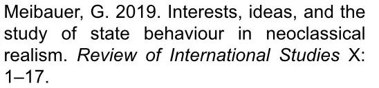
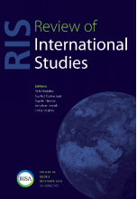

收录于合集 #理论研究 96个
作品简介
【作者】 Gustav Meibauer 是伦敦政治经济学院国际关系学系博士后研究员。研究兴趣主要为外交决策、强制外交、军事干预，以及其他更广泛的安全研究。此外，他也研究新古典现实主义在理论上对外交政策分析和国际关系理论的贡献。
【编译】 周雨橙（台湾大学政治学研究所）
【校对】 王 川
【审核】 陈 勇
【排版】 吴 俣
【来源】

期刊介绍

国际研究评论（Review of International Studies）是由剑桥大学出版社代表英国国际研究协会出版且同行评审的国际关系学术期刊，收录出版高质量的研究论文，检证一系列广泛的研究问题。期刊致力于反映全球政治的性质变化、新兴的政治挑战，以及当代社会对上述议题的理解方式，旨在为国际社会搭建一个平台，讨论当下紧迫的全球议题，2018年该期刊的影响因子为1.791。
新古典现实主义中的利益、理念与国家行为研究
Interests, ideas, and the study of state behaviour in neoclassical realism
Gustav Meibauer
内容提要
编者按： 阅读原文时 需注意几个 比较抽象的 概念性词语：理念（ idea）、观念（ideation）、信念（belief）、认知（ perception ） 的区别 。
观念变量（ideational variables）已经被频繁地使用在实证主义思维（positivist- minded）和国家行为的物质主义分析之中。由此，这类研究无可避免地受到理念运用方面的理论性挑战。在本文中，作者认为将实证主义和物质主义路径的观念因素（ideational factors）整合到国家行为中，需要：（1）从概念上辨别利益（interests）和观念、个人信念（individual beliefs）和社会理念（social ideas）之间的差异；（2）解决可操作性（operationalisation）和可衡量性（measurability）的挑战。为此，作者以新古典现实主义为个案进行研究。作者主张在政治审议（political deliberation）中将理念重新概念化为外化的个人信念（externalised individual beliefs），使得新古典现实主义者能够专注于研究理念和观念竞争如何在从物质上的既定利益（materially given interests）到最终的外交政策选择的过程中发挥干预性作用。同时，重新概念化更清楚地将理念操作化为可辨识的语言和沟通方式。此外，作者认为虽然这种重新概念化与现实主义范式的假设相一致，但无需局限在新古典现实主义，也可运用于不同的范式，使同样具有实证主义思维的建构主义者和制度主义者避免不同的观念因素在概念上与方法论上难以处理的平等关系。
文章导读
前言
“硬”实证主义者（strict positivists）认为观念对于社会科学的发展来说发挥着并非充分甚至是非必要的作用。而 “态度较软的”实证主义者（softer positivists）在使用观念或认知概念，思考观念变量的因果机制时，则难免遭遇操作化、可衡量性和因果循环性上的困难。不精确地描述不同种类的观念及其在因果过程（causal process）中扮演的不同角色，导致 “软”实证主义者在解释理念在政策形成中所发挥的作用时，混乱层出不穷。
本文以新古典现实主义为个案，研究（软）实证主义路径下，观念与国家行为的整合。作者主张必须以本体论上的必然性来保留利益和理念在定义上的区别。将理念（重新）概念化为外化的信念，再通过语言将 其 带入政治审议中，使得新古典现实主义者避免了不同观念的平等关系 的困扰 ， 得以 专注于外交决策过程中理念竞争的作用。 值得注意的是，这种理念的概念化同样可被应用在其他实证主义取向的研究框架中，为进一步思考国际关系学科中不同范式的理论假设，以及它们之间的差异和交叠之处，特别是外交政策的经验研究方面，提供了条件。
为求理论上的成功，探讨观念因素整合进新古典现实主义研究框架时，需设法实现该路径在本体论上和认识论上的要求。对此，新古典现实主义者采取的一种方法是接受开放、自反甚至解释主义的变体形式，更紧密地与古典现实主义相结合。毕竟，观念的运用可追溯至古典现实主义者们的论述。
本文所追求的另一个目标是，明确检视理念和信念在新现实主义研究框架中的融合 ，也就是在一个以国家行为的实证主义、理性主义和物质主义理论为核心要求与导向的研究框架中的融合。同时，本文也谈论了学界反复出现的关于新古典现实主义范式边界的辩论。
作者提出了一种 对于 新古典现实主义 中理念使用的 理解方式。首先，理念根植于个人信念。 个人信念可以弥补决策者对物质世界认识的不足，进而帮助决策者对国际环境作出评估。 而个人信念必然与人际互动有关；其次，理念因此有意识地运作为外化的信念。决策者用各种理念来判断 体系要素 对国家行为的潜在影响，并据此判断不同政策选集的成本和收益，从而做出选择。 作者证实这遵循了现实主义对物质利益为主要因果、（有限）理性以及“软”实证主义的要求。
新古典现实主义 和干预变量
相比于新现实主义，新古典现实主义弱化了体系要素对国家行为的约束作用。 新古典现实主义者主张 体系要素 仅是 影响 国家行为的 因素的一部分，它不够特别，不能决定唯一的行为路线；它的影响也不够显著，即使是最敏锐的观察者也不一定能够完全洞察其影响。 决策者身负的任务可能因为某些原因变得困难重重：首先，决策者未必 能 密切或持续地追踪客观的物质 力量 变化趋势；其次，决策者可能并不确定何者才是回应某一具体情景的合适的国家行为；最后，决策者的选项可能受限于国内政治条件。
新古典现实主义的核心贡献是，纳入了能够 调节体系要素 影响的干预变量 ， 作为新现实主义结构和物质能力基本假设的补充，并以此解释外交政策在时间和空间上的变化。 多数新古典现实主义者谋求遵循新现实主义者对物质主义、实证主义和理性主义的要求；甚至还有学者主张新古典现实主义已经发展为一种现实主义的“新正统”。然而，新古典现实主义也因为其干预变量的庞杂、理论性上的退步、对现实主义范式要求的不明确而受到批判，遭遇“身份困境”。一些新古典现实主义者就此回应称，更好的解释和智慧的多样性可能比范式的纯净度更为重要；另有一部分学者则尝试使研究路径系统化甚至统一化。
还有一部分学者则试图将不同的研究路径类化而非统一化。例如，学者可根据新古典现实主义的研究方法对新现实主义的背离程度对其进行排序。由此便阐明了 新古典现实主义者面临的可能违反范式假设的相关问题，其 违反 程度上的不同 乃 取决于他们的研究对象和他们所使用的变量。 一些新古典现实主义者认为干预变量的价值在于进一步增加新现实主义的解释力，意即当体系要素无法充分解释国家行为时，干预变量便可用于解释问题所在；另一些新古典现实主义者则认为干预变量并非只在特殊情况下发生作用，而是永恒不断地在运作。基于这些认知，众多学者专注于制度约束、公众舆论、媒体报道、动员能力以及资源开采等因素。这些因素大多为可衡量的，并且通常基于物质事实，因此不会对（软）实证主义和物质主义的基本假设构成太大的挑战。然而，新古典现实主义者也研究观念在体系影响向国家行为转化的过程中所扮演的角色，这便形成了概念上的困境。
新古典现实主义中的
认知、信念和理念
在新古典现实主义中，三种 类型不同 但皆与观念相关的变量被频繁的使用，它们分别是认知、信念和理念。 学者们通常有共同的研究出发点，即决策者有选择性关注的倾向。对认知和（或者）信念的关注源于外交决策分析和政治心理学中的研究方法。出于对简化与一般化的追求，这类学者通常比较关注不同决策者或不同案例中观念的变化。信念可能是作为一种个体的锚定感知，为构成认知的基础。信念一般与一些特定的个体有关，例如总理和总统，用以反应出他们如何看待这个世界、处理信息、引导外交政策。但是，这种路径有一大缺陷，政治进程中涉及众多人员，信念必然受到一些人际关系的影响。与之相对的是，一些新古典现实主义者专注于社会理念、意识形态、文化和国家身份的研究。
上述这些研究路径都面临难解的概念问题。首先，使用观念作为因果上有影响的变量可能从根本上挑战物质主义的基本假设，因为其难以在任何特定的物质事实上得以确认。其次，作为一种内在心理活动（internal mental events），理念在（软）实证主义的研究框架内是否具有可操作性？最后，如何将观念运用于以理性主义研究路径为主的国家行为研究中，并与之相适应?
为此， 作者主张在确保观念能够在新古典现实主义中起作用的同时， 遵循物质主义 、实证主义和理性主义的范式 要求 。首先，作者阐明物质上的既定利益与观念的差异，以及它们分别作为独立与干预变量时的相互关系。第二，作者认为在概念上有必要区别信念和理念，但是这两者也可通过 外化 的过程相互 关联 。第三，这种重新概念化允许理念在政策审议出现观念竞争时， 与人产生关联 ，这使 其 在实证研究中更易操作。
**
**
物质现实、利益和观念
事实上，新现实主义与新古典现实主义所共享的物质主义形式，并不像其批判者所批判的那么过于简化。与之相反，它们承认甚至认为体系中单元间的社会互动是必需的。就新古典现实主义者而言，其认为国家行为是“环境强迫”（environmental compulsion）下的产物。
新古典现实主义者主张新现实主义的解释不够充分，并且观念有助于引导决策者做出政策选择。观念至关重要是因为它能够解决关于认知、诠释，理解不清晰的外部激励与约束条件等方面的实际问题。
观念作为新古典现实主义中的干预变量（而不是作为独立的因果关系）必须遵循利益在因果顺序上的排序。新古典现实主义者试图评估特定命题的自变量和干预变量对因变量在因果关系上的影响，并采用了休谟的因果关系概念（Humean concept of causality）。
同时，不同的 信念 或 理念 之间 并非 是 “毫无关联” 的，特定的个体和特定的信念间彼此相互吸引。这种关系就如马克思韦伯所描述的基督新教徒理念与资本主义的关系一般，为有择性的亲和关系（ elective affinity）。
这种利益和观念因素之间的关系，并没有严格地确定。 它甚至暗示了一种更高程度的可能性（但并不确定） —— 人们的信念反映了其利益 ，或是因为这符合他们的利益 ， 而符合人们各自利益的 观念 可能会影响他们的行为。 但是，观念和利益间没有直接的因果机制，观念可能还与利益相矛盾，其结果难以预料。 若用新古典现实主义者的话说，观念有可能是对既定物质事实的错误解读，即便有悖于国家利益的信念或者理念不太可能获得决策者的支持。而事实上，由于物质现实 始终 存在，如果决策者坚持过于偏离客观事实的理念，将面临战略失败的风险，进而为其错误观念所造成的国家脱轨行为付出代价。
**
**
信念和/或理念
信念是人类个体思维中内在且固有的认知产物，它引导决策者诠释国际体系。 学者们根据信念的概论划分出三种不同类型：（ 1）具体政策或有因果关系的理念 / 信念；（ 2）支撑政策理念的信念 ， 同时也是 “范式的” 或 “按部就班的信念” （ programmatic beliefs）；（3）哲学上的理念或者世界观。其中，有因果关系的信念或许 被 最频繁地运用于经验政策分析，并由此推断出人、事、物的因果 关系的 连结。 这种因果关系可能被狭隘地理解，也可能被广泛地应用。
关注个人信念的主要优点是：对新古典现实主义者而言，其保留了理性主义，在解释过程中 使 物质因素优先于观念因素。信念与（方法论上的）个人主义（ individualism）相呼应，而理性主义的假设和个人主义可以被理解为在分析上 是 具 有 关联性 的 ，因为前者倾向于在理性选择的具体案例中将个体作为基本分析单位。 因此，某一社会现象便被理解为是基于个人的行为、决定以及动机而产生的。关注个人信念有别于将观念视为社会产物的其他路径。人性使然，决策者偏好于将复杂事务简单化，他们运用观念上的经验法则（ideational heuristics）将世界简单化。决策者的信念在理性决策中作为一个输入项（input）在运作。
然而， 关注个人信念在决策过程中的影响至少有两个缺点，两者都体现在了 新古典现实主义 中。其一 ， 与实证主义有关。 实证主义者通常认为研究者可以独立客观的观察某一现象。原则上，这便于发展理论模型；但实际上，关于人类行为的研究指出，主体性、诠释、不可预测性和研究伦理等限制使得研究目标难以被准确定义、衡量与评估。一些实证主义者认为通过信念对因变量的影响可以间接地观察到信念本身，但这创造出一种理论上难以驳倒、经验上难以证明的因果循环。 其二 ， 与理念的社会作用有关。 在定义上排除社会影响和维度使得仅对于个人信念的关注在概念上与方法论上都存在问题。也就是说，信念既不能作为内在心理活动，除了某些特定个体以外，信念也不能在政策审议时作为公开使用的工具；此外，信念还不能在某些条件和具不确定性的情况下充当协调点。
将理念概念化为外化的信念能够规避这些问题。理念的半论述概念（semi-discursive conception）在本体论上“足以够用”。 理念可以由具体的人（基于信念）创造，（在交流中）散播，（作为变量）嵌入因果关系的排序中，改变（例如，被遗忘） 。理念作为一种外化的信念在概念上有别于文化、意识形态等这类更集中、更连贯、更持久的现象。
值得注意的是， 这种重新概念化并不必然排斥 新古典现实主义 的理论根源或其潜在应用。精确定义理念作为信念 的外化，表现 在 沟通 交流中，可以帮助克服一些在定义上的难题，同时保留利益和理念 在概念上 的区别， 并 遵循休谟的因果关系 。 一般而言，这些定义上的困难主要与信念、理念和其他的一系列与理念相似的概念之间的平等关系有关，这些概念源于一些（软）建构主义和制度主义的研究。
如是， 将理念重新概念化为外化的信念 也有助于处理前述所提到的操作化问题 。 强调信念作为内在产物 以及 理念作为审议工具 的差异使得 理念可以从不同的 途径 中 获取 ，例如文本、演讲等。 这就使得理念变为可直接操作的对象，并将其与可衡量的，经验上可追踪的现象联系起来。
这种对理念的理解方式，虽然接受了非现实主义的概念性根源，但是仍遵循了物质主义、理性主义和（软）实证主义的基本假设。许多新古典现实主义者似乎已默认了这一理解，开始分析备忘录、会面时间、演讲等。此外，这种理解方式也指出了外交政策审议过程中冲突性理念的作用，而非仅强调能够引发精英们共识的共享性理念的作用。
观念竞争和外交决策过程
决策精英在面临 既定的体系层次的影响时 ， 会基于其个人信念 制定相关 应对政策 ，并将这些信念外化为审议时所展现的理念。但是，系统诱因通常没有具体到足以决定一系列行为反应， 系统诱因可能会导致决策者产生不同的决策立场，而这并不能被视为是单纯由系统条件或是意识形态导向的结果。 即便在一个封闭的决策层，人们也会有不同的并且实际上大相径庭的信念，这些信念作为理念被人们带进外交决策的过程中。拥有相似理念的个体间容易达成共识，而与其他理念不同的个体进行竞争。
外交决策执行者之间不同观点的碰撞涉及参与沟通交流的互动过程，这个过程的 特征 并 非 内在或意识形态的一致性，而是对于如何正确推断系统 刺激 的矛盾和困惑。 外交决策分析长久以来的传统都将政策审议视为观念竞争的过程。因此，决策的特点应是不同认知的个体间的互动。
不同的理念经常在诠释国际系统与某种规范性议程，以及实现目标的一系列手段中结合成不同的大战略理论（theories of grand strategy）或者甚至是国家意识形态（national ideologies）。然而，这些范式对外交决策过程所起的经验作用可能被夸大了。有一点值得一提，理念在短期决策及外交手段和工具的选择方面也很重要。 作者认为观念竞争 才 是任何判断与 考虑体系要素 和政策选择过程的特征。
此外，理念变量（the variable of ideas）可用于解构意识形态或范式一致性的概念，并梳理出植根于个人信念的构成部分。在方法论上，理念作为信念的外化，其干预的因果作用，在时间与信息皆不足的外交决策中，可能更易被察觉。研究外交政策审议中所采用的观点，可能有助于瞥见长期外交政策立场的微观基础。
四种决策途径
根据经验，哪些决策动态是可以被预见的？ 第一，通过对 不同 理念 的思考， 决策者们的 立场可能会趋于一致。第二，领袖可能通过强加决策 来 帮助突破观念竞争 ，不过这要 取决于决策 的科层结构 和领袖 的 特征 。 第三， 当 缺乏共识或 无 决定性的领袖 时 ，观念竞争 被 遗留下来， 决策因而被拖延 。第四，决策者可能通过假妥协或增加解决方案来设法摆脱观念竞争，这将进一步产生三种结果：（ 1）可能有更多的 冲突性的 观点；（ 2）可能有更多的领袖依赖顾问 进行 决策；（ 3）可能有更强 的促使其更快采取行动 的外部压力
那么，这样的分析框架还属于（新古典）现实主义吗？ 对于（新古典）现实主义者来说， 理念 可能在决策过程中是重要的，但是如果它们超出其该有的分量，国家便会误判客观物质现实，从而为此 受到某种体系层面的惩罚 。这是由于国家无法逃避国际 体系 无政府结构的束缚。 条件并不是严格限定的，其中也为外交决策因果路径中的干预要素——理念和国内政治进程保有空间。理念使决策者去思考国家利益的属性，以及决策时政策集的收益成本，但这都是在一个无政府和能力的相对分配（relative distribution of capabilities）状态下，在既定的地缘战略背景（given a geostrategic context）中的选择。 如果与既定国家利益相矛盾的 理念 长期 控制 外交决策过程，或者两者之间的竞争僵持不下，新古典现实主义者便会预期其外交政策的 失败 。除了证明理念如何在外交决策过程中，以及在外交决策过程中的何处对因果机制产生影响，新古典现实主义者还需借助经验研究证明，当（坏）理念大量且持续地干扰国家的决策过程，该国将会受到体系层面的惩罚。
结论
本文的两个贡献是：第一，证明新古典现实主义者可以将观念因素运用于外交决策分析的过程中，并遵循原有的范式要求。第二，解构一个复杂的概念，重组信念、理念和语言等概念，使得这些概念能够被实证主义学者更广泛的使用与操作。
新古典现实主义是将观念因素整合进实证主义研究框架的成功案例。除此之外，作者还将讨论延伸到现实主义变体与建构主义概念的兼容性方面，有助于进一步思考不同国关范式之间的理论假设及其差异性和重叠性。
新古典现实主义在运用观念因素作为干预变量时主要面临两个挑战，第一是其范式假设要求物质上的既定利益与外交政策结果之间是独立的因果关系，因此必须厘清观念在此因果机制中的作用。在现实主义的路径下，信念或者理念不能是一国的利益，它们同时需要与外部体系因素（自变量），以及外交政策选择或结果（因变量）在因果机制上相关联。针对于此，新古典现实主义者主张，国家的利益是以无政府状态下的相对物质能力为基础的，决策者在面对时间的压力和信息的不足时，通过观念理解物质世界的知识和信息。其二，新古典现实主义者面临概念上区分个人信念与社会理念的困境，以及它们分别对外交决策的影响。对此，作者认为信念和理念在概念上是不同的，但是在因果上是相关联的。个人信念帮助决策者评估国际环境，决策者将个人信念融入到外交政策的制定中，并以此劝说其他决策者。
更广泛地来说，这种概念的修正处理了世界政治研究中理论上和方法论上的问题，并将理念直接操作为诸如演讲、会面时间等可追踪的线索。这允许新古典现实主义者在遵循（软）实证主义的同时，研究外交决策中利益和观念的相互作用，有效补充了传统的物质主义和理性主义的基本假设。
注： 欢迎读者朋友通过以下链接，翻阅国政学人新刊速递第二期的第六篇摘要，同为对新古典现实主义的讨论。
【新刊速递】第02期 | International Relations Vol.33, No.3, 2019
_ ** _ ** _ ** _ 本文由国政学人独家编译推荐**__
扫下方二维码查看往期精彩
【新刊速递】第01期 | Review of International Studies Vol.45, No.4, 2019
分类导览 1

分类导览 2

我知道你“在看”噢